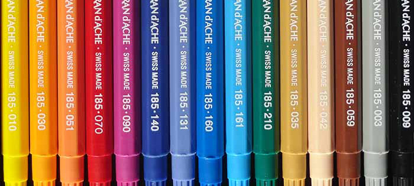

ACRYLIC & OIL SPRAY CANS
ACME spray paint was developed with the artist's needs in mind, and designed to offer the best coverage, alongside great control and a vibrant colour range. ACME paint performs extremely well in a variety of different climates, hot and cold.

FINELINE & FLAT MARKERS
ACME has a variety of colours in both the fineline and flat series. ACME markers are permanent and weather resistant.
FAN & FAT CAPS
ACME has a variety of caps to control your spray, from the finest outliners to the fattest fans for maximum coverage.